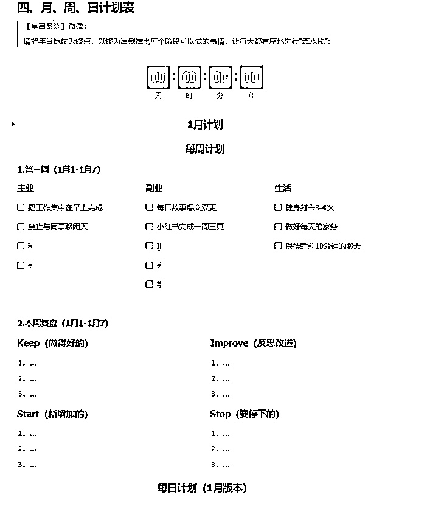

来源：https://eqc9f6vzuhv.feishu.cn/docx/Mv9rdsfgZoBWD3xwfqBcsVmYnye
大家好，我是微微，今天是我和对象恋爱11周年的纪念日，也是我向她求婚的日子。
在这里微微把这份喜悦分享予各位圈友，愿各位都能有情人终成眷属，2024一起躬身入局，把手弄脏，生财有术，乐活创富。
这篇文章是受到白哥@理白《从3000元到300万的10个生财思维》的启发而来，也是我在生财一年的真实体验、真实经历，更是真心感受到互联网能带给普通人崭新的人生。
在世俗间普遍认为应该“事业有成”的30岁年纪，我没房没车，也没有过硬的天赋、技能、资源、背景，但是我依然实现了自己在一年前刚进入生财的承诺，而且是在近半年内做到的：我不仅赚回了10倍门票，而且是35倍门票。
「没有人不辛苦，只是有人不喊疼。」我对靠谱姐@梁靠谱的这句话深有感触，让我从一名完全小白的认知跨越到优秀自媒体人应有的素养，也是让我在半年间飞跃成长，执行力拉满的关键因素之一。
毕竟想要赚到第一个100万，执行力可以说是首位，我很庆幸自己已经预约到了入场券。
这是我在生财过去一年来的【生财履历】，我相信无论是前辈，或是第八期的新人小白，这8个生财有“术”，定能对你有所启发、有所触动。
也许大部分人都知道“指数级”这个词，但是并非每个人都了解“指数成长”。我现在就特别喜欢这个词，因为它无数次证明了一个经久不衰的真理：
从0到1会很难，难到你持续掉入内耗焦虑的陷阱里，重复循环努力-放弃-坚持-放弃-努力的过程。而一旦完成0到1，接下来的1到10，将会是你起飞的前奏。
宇宙姐@Coco的小宇宙的一句「感性相处，理性做事」，让我明白其实从0到1需要的并不是你的能力强度，而是你的心态强度。你不是不可以，而是你从不相信自己能。
但愿我能以一年前同样的萌新身份，已经茁壮成长为今日的小树苗，能够给你带来“微微他都行，那我也行”的信心，毕竟「相信自己，是成功的第一步。」
你好，我是今年30岁，INFJ型的微微，也是盖洛普前五为「沟通、交往、个别、体谅、成就」的小蓝人。未来这一年，我们要一起赚回不仅是10倍、20倍、30倍的生财门票，而至少会是：100倍。
微微，求婚完美落幕，祝你未婚夫妻生活，幸福快乐。
改变人生的入场券，是远离无意义、无价值的社交。
在接触到自媒体圈之前，我和现实中大部分人一样，都是浸泡在按部就班、得过且过、即时享受的圈子里，过着没有未来，充满幻想的生活。
圈子对人往往具有潜移默化的影响。在某一个和朋友闲聊喝酒的雨夜，我听着他们对金钱的鄙视、对生活的不公、对自身怀才不遇的高谈阔论：
那一刻我突然意识到，过去自己所说的每一句话，所思考的每一个问题，所做的每一件事，所得出的每一个答案，都局限于当下的认知，继而演变成今天一事无成的结果。
曾经自己的所作所为，造就了现在的我。
那一晚是我二十多年来，第一次发自内心感受到：你的成就取决于你最常接触的五个人，接近什么样的人，就会走什么样的路。
自此，微微在临近而立之年的，鼓起勇气选择了从零起步，来到一个完全陌生的世界。
所幸在下定决心做自媒体的时候，我也并非单纯的鲁莽之辈，得知想要改变现状，首选肯定是从已有技能方面去打基础：写作投稿。
不过虽然当时已经有着坚持10年写作、5年阅读的经验，奈何对于公众号平台没有充分了解，不懂何为调性、关键词、新媒体文，何为排版、配图、注意事项等，以致于刚开始投稿那会，连续32篇均为两千字以上的文章，全部石沉大海，无一幸免。
而距离开窍那一晚已经过去近2个月的时间，我几乎完全斩断了与现实生活中无意义的联系，上班不再闲聊、下班不再聚会、周末不再酒局、生活不再做着有一回没下回的兼职。
在写稿那一个多月时间里，原本上班9小时，摸鱼闲聊、偷懒打游戏7小时的状态，现在坐在电脑前就是一天：阅读文章、了解调性、收藏信息、寻找选题、挖掘素材、设定结构...
原本下班四五个小时的游戏、聚餐、闲逛等放纵时光，在忙完家务活之后，我仍然如上班状态：坐在电脑前码字到深夜。
一天24小时，除去工作、睡眠17个小时以外，我花在写文、改稿、学习新媒体文的调性与结构上的时间几乎都在4-6小时。
当我选择把自己“消失”于人前、“消失”于没有成长精进空间的圈子以后：
在不到两个月的时间里熟悉掌握了新媒体文的写法，同时从第38篇稿子开始，稿费100元以内的征稿号，已经可以10投10中，月入1000+妥妥的。
自我消失术，并没有想象中那么容易，但也不难，困难程度=懒惰程度，方法不外乎：
首次开窍，让我第一次感受到互联网的强大，足不出户可知天下事，足不出户亦能迎财富。
那是我参加工作以来第一次感受到“钱”或许难赚，但也存在较为轻松且合理合规的渠道，关键是能不能耐心地打基础、静心地做好当下的事。
你愿意付出多少的时间沉淀、你愿意忍受多久的默默无闻、你愿意相信多远的未来人生。
这一切，都是厚积薄发的过程。引用理白老师的一句话：因为你在坚持这件事情，本身就已经战胜了90%的对手。
随着写作之路逐渐走向顺利，我也意识到，坚持不该是一成不变的机械化模式，它也有既定的SOP优化路线。
我已经拥有了“创作内容”的能力，就不该再次回到过去的被动模式：待在安逸的环境里，过着“付一得一”（付出一份时间得到一份钱）的生活。
主动的人生，才会有不一样的结果。毕竟享受安逸是本能，跨出舒适区才是本事。
但是走出舒适区并不是一件光靠热情、光靠冲劲就能干成的事情，它意味着你需要拆掉好不容易建立起来的“安全区”，走下你所站的高度，带着目前持有的经验从0开始。
而这个经验，则是决定你什么时候跳出舒适区的关键时机。
你需要积极正念地看待自己有多少底气，静心冥想自己能够做到什么，能够如何踏好每一步，再做出有目的性的选择，并非盲目跟风而动。
即：仔细想想自己当下拥有的一切，包括但不限于技能、人脉、资源、认知、天赋、热情等，手上的筹码是否足够开启新的项目、新的航线、新的目标。
当我能够依靠写作投稿做到月入四位数的时候，同时也经历了被课程坑、被中介骗取稿费、被平台吞掉稿费的挫折，成为了我第二次开窍的契机：
与其停留在「为他人打工」，循环做着一份时间出售一次的重复性工作，不如尝试突破自己，把自己的一份时间，通过某种方式多次卖出去。
这里有一点需要注意的是：不能从单纯片面的角度去回顾自己所做的事情，要不然大概率会陷入焦虑、迷茫、怀疑自己的陷阱里。
我以正念的形式回顾自己无论是过去，还是这段时间以来获得的东西：
再通过冥想去清空脑海里的杂念，只留下与目前持有物相关信息的关键词，比如：公众号、写作、改稿、号主圈...
综合起来，能够依靠当下的一切去改变单纯投稿，而又不丢失自己输出能力，还能一份时间多次售卖的，也就是从0到1搭建一个公众号，成为号主，借助平台打造多元变现途径。
正念冥想的作用远比你想象中更大，积极坦然接受自己小白的身份，却又设法从缝隙中寻求突破点，有效避开焦虑内耗的负面情绪，是剖析自己现状的最佳方式之一。
与其花时间在纸上写下不足的地方，不如让一切变得可视化，从中冷静接受一切，找准能改变当下的事情。
然而当你做出选择以后，就要把“长期主义”深深扎根于心底。
因为没有任何一件事情，是你决定开始之后，就一定能达到你所想象的模样。在前行的过程中，所遭受到的打击、挫折、质疑、否定等，大概率会比正反馈多3-4倍。
刚开始，想象总是美好的，而现实却是需要大心脏的。
当我决意以写作号主在自媒体正式出道之后，我一直坚持到现在也仍然没有放弃，尽管目前它带来的收益远不如个人想象，但是我收获的价值却远超乎实际所得。
有些话听到的未必就是事实，有些事看到的也不只是表面。在取得成绩、提升个人写作、认知、改稿等能力之余，我也体会到了上坡路的滋味。
在这个过程中，会经过一段较长的零反馈或者负反馈的时间，甚至会产生“当初是为什么坚持”的自我否定，像是我当初的情况：
我记得那会每个月平均要改五六十篇稿子，经常改到凌晨三四点、或是通宵，陪伴我的只有那一盏亮着黄色灯光的台灯，对象11点给我泡的热茶，我关上电脑那一刻早已冰凉，而且依然还是满满的一杯。
无偿付出、点燃自己去照亮其他人、免费做了这么多事情，真心换来的却是寒心。
长期在这种没有正反馈的状态下，不仅会影响个人的动作，扰乱行走的路线，而且也会很难坚持下去的，甚至会持续受到焦虑、内耗、恐惧等负面情绪影响，继而影响你的生活。
这时候，我看到了靠谱姐的一篇帖子：《博士医生打造个人 IP，通过互联网副业纯收入超过两百万》
文中的一句话让我有了第三次的开窍：
当然也有冷言冷语和看热闹的人，有时候气到觉得胸和甲状腺都快长结节了，但是靠着一句话坚持下来了，如果你做的事情所有人都理解，那你得多平庸啊。
我的心安定了下来，我也冷静地看待自己的得与失，设定让自己守住初心、坚持到底的三条规则。
外界的声音都是参考，你不喜欢就不参考。
心随意动，意随心生，无论是我们的内核还是外在的环境，都是影响我们每一个动作的关键因素，所以反馈是正是负显得尤为重要。
很长一段时间，我都把《吸引力法则》里边的这几句金句放在自己每日晨读的第一步：
打从心底肯定自己，发自内心认可自己，心里无比信任自己，每天给自己一个心理暗示：
我要做到、我能做到、我会做到。
无论是工作、生活、感情，几乎与人性感知、行动、惯性等相关的联系，都不会超过“热恋期”---三个月。
即使有暗示的力量加持，如果执行力不到位，或者执行不对位，大概率会在三个月后产生倦怠感、疲惫感，甚至是厌恶感、崩溃感。
为了热血能够一直燃烧、动力能够随时加满、心情能够维持上佳，对所做项目保持【持续性新鲜感】，给自己定下【阶段性目标】尤为必要。
作为萌新、作为小白、作为新人，在经验不足、认知不高、能力不强的情况下，每次制定为期三个月的目标计划，才是越走越稳、越走越远的制胜秘诀。
先给自己确定一个为期3个月航行计划，然后拆分成每一个月该达到的“港口休息站”，再拆分成每一周该完成什么阶段性目标，再拆到每天具体所要做的事情，以终为始倒推。

把每一天变成“流水线式”的工作，看似做着不起眼的小事情，实则把需要用脑力思考的内容减少到最低，把精力全部点到【执行力】上。
越是不用动脑，跟着计划直接去做的安排，效率相较于一边思考一边执行而言会更高。
而且每天的“小事情”也不带重复，既有新鲜感而又在逐步推进整体工作，就像是在不同地方刷怪，即使是在沉淀、是在练级、是在等待，你也会感受到：
这三个月里，每一天都是全新的一天，每一周的变化，每个月的成绩，都值得期待。
认清自己处于哪个阶段，就专注于操心哪个阶段的事情。不要看着小学的知识，去焦虑大学的课程，未来的事就交给明天的自己。
人性总会有对比的心理，无论做事还是休息。比如同时起步，自己好像成长更慢；比如放假休息，他的假期好像过得比自己充实。
人无完人，前方永远会有更优秀的人出现，这和天赋、资源、经验、积累等多方面因素相关，自己定下的目标或许其他认一个月，甚至一周内就能完成。
如果自己偏离了眼前该做好的事情，选择去对比、去对标、去对照，不相称的模仿只会产生焦虑和内耗。你只要能在自己指定的计划中完成想要做到的事情，那就值得称赞，多夸夸自己，少浪费时间失落。
认准自己每天该干的事，该完成的任务，该做好的复盘，不去争做第一名，也不在乎成为最后一名。
每个人有每个人的节奏，每个人有每个人活法。
而风口这件事也是同理，即使是大热的风口信息，也未必适合你，稳扎稳打才能把根扎实，你也才能拥有【遇见幸运】的机会。
唯物主义➕唯心主义=王炸。
当我通过公众号成为万粉博主、成为写作导师之后，我也意识到自己陷入了一个卡点：自学瓶颈。
虽然一路以来我有着不俗的执行力，也能够根据负反馈去调整自己的动作，让自己一步一个脚印地往前走，但是按照【时间成本】来说，是不划算的，而且有隐性的逃避心理。
我在用“社恐、自卑、内耗”等标签去消耗自己为数不多的青春，表面上看似在奋勇向前，实则天平已经开始朝着“被动式人生”的方向倾斜。
因为再努力也好，不去向上社交、不去结识朋友、不去链接大佬，终究是把自己困在一个小圈子里，认知、意识、见识都不会有太大的突破，也许努力三年=他人一年。
真正的破圈成长、主动夺取成功，是懂得读万卷书、走万里路，更要高人指路。
毕竟成功，也不会是一夜之间的产物，更不会是你闭关努力几年就能做到，要学会发现大佬、关注大佬、靠近大佬、学习大佬、模仿大佬、成为大佬。
所以在坏脾气的小可爱老师的建议下，我果断加入了「生财有术」这个大家庭，并在不到半个月的时间里看了60多篇精华帖。
坏脾气的小可爱老师说，犹豫就会败北，坚定与内耗告别，在生财有术里不断地去挖掘、争取、努力，转变成“主动式人生”。
我按照她的话去执行，加入生财的一个月时间里，沉浸式躺在精华帖的世界里，感受来自高维度的降维打击，感受来自不同大佬的视角，感受普通人如何在短时间内逆袭生长...
起初，焦虑和内耗的心情的确是再次缠绕上来，但是回想起生财里茁壮成长起来的每一位圈友、每一位普通人，信息差的冲击使我有了第四次开窍。
我把所有阻碍自己前进的负面情绪再次化作【执行力】，根据坏脾气的小可爱老师、贴子里前辈们的分享内容：
我在接下来几个月时间里，通过学习收获、圈友建议，融入到实际行动以后，明显有了不一样的成长：
在这个过程里，虽然也有遇到不少挫折、打击，但是秉承着不要觉得烦、不要玻璃心的原则，铁了心去听话照做，发现真的能少走很多弯路。
毕竟已经跑在你前边的人，能始终确保你在走直线，而不是一边掉坑一边爬起，一边受伤一边内耗，有遇到贵人、可靠的导师，请不要质疑，坚定一个信念：
听话照做，必有收获。
当然听话照做是一个关键的门槛，辅之以知识碎片到智慧拼图，才能搭建系统化的学习模式、完整的个人认知体系，助力项目实施、加速获得变现结果。
碎片拼图术，指的是通过捕捉各种信息差，把每一个有效的知识点，视作一个个碎片，分类存放在相应的知识区，再通过它们之间的联系，拼凑成能供自己使用的图板（搭建知识管理系统他）。
也可以简单理解为：独立思考，锻炼个人的思维逻辑能力，做好自己的知识管理。
生财有术里遍布着互联网上大部分平台的赚钱信息、项目内容，尤其是【风向标】里中标的信息差，都是领先互联网半年-1年的风口信息。
即使是有一定基础的经验者，难免都会被吸引，搜索收藏一大堆与所做项目有关或是稍微沾边的信息，甚至是眼前毫不相关的知识，更何况是初次加入生财有术的萌新小白呢。
碎片应该是拼图中拆解出来的独立个体，每一块都是完成画面的关键，甚至拼在一起可以创造出更全面、更丰富的画面，而不是单纯【标签】一致的知识。
领域一样，赛道一致，内容相关，那是碎片化知识，它们有着各自专属的拼图模块，并不能拼成一张完整的拼图。
起初我一直被这一点混淆，到底怎么样才能精准搜索、捕捉到我目前所做项目的知识碎片，拼成完整的知识点为我所用。
结果收藏了一大堆【公众号】、【写作】、【认知】标签的内容，回顾那一刻，我甚至都找不到哪个之间有关联。
直到我在理白老师的这篇精华帖里《从3000元到300万，这10个生财思维，让你不走弯路斩获人生第一桶金｜写在理白的三十而立》的第10点找到了答案：
系统思维。
我当下要做的并不是囫囵吞枣，那是在自欺欺人，我该做的是搭建一个稳定的变现闭环。
这是我的第五次开窍：不要沿着散落的信息去寻找正确的路，而是要先摸清这条路通向何方，再把铺成这条路所用的砖块找出来。
直到这一刻，我才发现过去自己是停留在了一个“井底之蛙”的位置上。我从未想过自己当下做公众号，除了接广、授课、咨询以外还能有什么变现渠道。
更没想过当下的所作所为，原来也只是其中一块碎片。
我的状态应该要随着我的成长而产生变化，而我所做的事情也该同样如此，需要隔一段时间就更新一遍，不能以同样的视角去重复做着“以为是终点”的事情。
意识到这一点以后，我重新梳理了一遍关于写作、公众号的变现闭环内容，拿出一张A4纸：
在左边的一页纸写出自己目前运用公众号所获得收益、收获的途径：
在右边的一页纸写出其他人运用公众号所做的运营动作：
...
把个人的认知与外界的思维对比，可以清晰看到自己到底是找到了碎片、还是找到了拼图。
其实这里也是相当于一个分水岭，视乎你个人的第一反应如何。
如果你是感觉到无所谓，那么目前你所做的应该就是你的拼图，你可以扎根于此进行加固、稳住当下。
如果你是和我一样感觉到有很强的冲击，原来自己才不过走了几步路的话，那当下自己的项目也就是一块碎片，得根据这块碎片可以拼成的图，去寻找相关联的其他碎片。
比如：
搞清楚自己所站的位置，才能确定你能否走得远。
我分别以写作、认知、阅读、自媒体四个低客单价的季度学习社群作为尝试，无论是进群学习，还是不进群直接购买社群资料都可以。
以此作为引流品，在陪伴式的交付之余推荐自己的利润品（写作课），在社群到期结束之时，尽管未能如愿拼凑成完整的图：公众号→社群→私域→产品。
但是也变现了8000+，同时开始接触公众号爆文，尝试多点突破、积攒更多碎片，看看能否拼凑更适合自己的拼图。
当我在受挫失利后，也发现了自己明显的不足之处：我没有自己明确的时间区，总是用所有时间去做一件事情，间接失去了其他有可能性的机会。
我们可以专注做好一件事情，但是不能一直依赖目前持有的经验去重复做这件事情。
做低价社群的时候，我发现无法转化更多用户、无法打造爆品的原因就在于我【没有时间】，我不懂营销的方式、我不懂爆品需要的因素，我没有时间去学习新的知识。
每天主业下班以后，为了保持四个季度社群的日更，每天只剩下完成每日分享、交付学员的时间，要想有新的输入、新的内容，除了减少睡眠时间别无他法。
一筹莫展之余，我再次刷到了理白老师的精华帖《考试第一、保送读研、写作出书、创业有果、恋爱甜蜜|自律10年，送给生财圈友，人人可复制的时间和精力管理心法》。
当时的第一反应是主业如此繁忙的人，是怎么在下班后几个小时撬动百万营收的，但也让我在冷静下来后，加入了理白老师的社群，想着近距离围观学习。
也正因接受到了社群的氛围熏陶、感受到了知识分享的盛宴，让我有了第六次的开窍：把时间切割分成三块，你会发现自己能做的事情远比当下要多。
无论是有主业或是自由职业，一天当中再是忙碌，也定会存在1-3小时，甚至3-5小时供你自由支配的时间。如果没有，说明你不太适合开展副业。
这段时间你可以在你打游戏、睡懒觉、喝酒聚会、下班在沙发上躺平刷视频等环节可以找到。
超过1小时没有工作安排、没有生活琐碎事、没有人要求你动起来干啥的时候，都应该把它归类到整块时间，然后把一天最费脑、最直接、最必须的事情放在这里。
比如我是：
不用过多与他人交接、不会因为外界信息而中断，完全靠自己现有能力就可以完成的事情，其他时间就不要考虑了。
这是我们大部分人都存在的时间，却又经常误解这个时间是整块时间。
比如上班摸鱼看剧，尽管有很多时候能够一天直落毫无阻碍，但是它存在不确定性，随时有可能出现突发情况，所以可以记住这个公式：
不确定+不专注+不（nan）用心=碎片时间。
像是坐公交/地铁、吃饭、上班摸鱼、上厕所、午休、出差等时候，都可以利用这些碎片时间：
无法长时间保持垂直专注状态的情况下，被动式的输入效果反而更明显，因为你更容易在短时间内捕捉到有效信息，而不会反复观看犹豫再三。
除以上时间外，也存在就偶尔几分钟的发呆时间、喝水时间、闲聊时间，在这里可以处理与人的对接、个别重要信息的回复。
比如：提前准备好相关的话语，全部复制在剪贴板上，尽可能一对多回答对方的信息，或是提取出重要内容进行简短回答。
零散时间不需要有太多实质性的思考，只要确保快、准、稳找到信息的重点，直接戳重点回应即可。
当我设置了自己的【时间管理】模式后，基本上没有特别着急的情况，没有到那块区域的时间，我也不会去安排那部分的工作。
这让我在短短两个多月的时间里，阅读了生财有术近百篇精华帖，不仅在认知、见识、眼界上的角度得到大幅提升，而且把公众号爆文也做了起来，实现了月入过万的成绩。
引用理白老师的一句话：不要计划如何花时间，而要知道时间花在哪。
越是在时间管理上耕耘自己的事情，越是感受到【时间成本】的重要性。
当我在公众号爆文取得成绩、在小红书上也崭露头角的时候，我也做起了自己的年度社群，也正因如此，再次忙碌起来的那一刻让我有了第七次开窍。
一旦一个人爬到另一个阶段，一定不能再是一个人继续爬。
如果一直在做着重复性高而结果没有太大变化的事情，如果一直没办法把个人的精力从繁琐的小事释放出来，那一定是突破增长的预兆。
当个人拥有月入过万的能力时，理应释放更多的精力去取得更多的收益，倘若所有事情都抓着不放，很多时候会来不及抓稳：两手空空。
因此当我发现自己在副业上，从最初每日工作4-6小时，到现在每日至少7-9小时，甚至不定时需要削减睡眠时间的时候，我发现了小几百能解决的事情，自己没必要一直抱着不放。
一个对电脑熟悉、对自媒体有浅度认识、愿意耐住性子整理资料的小助理，足以解决以下的工序：
...
到了这个阶段，助理可以很好地释放出你的时间、精力，而且你可以把已经打通的项目闭环，通过无偿交付的形式传给助理，制作一个自己的“分身”。
当她能够通过分销、做项目、带学员取得变现结果的同时，你也能够享受到CPS分佣，而且在助理和旗下学员的裂变下，也能进一步带动你的曝光。
看似花了钱，实则赚得更多。
越感恩、越幸运。
回想起一路以来遇到的人事物，如果我抱着抱怨、不解、抗拒的态度，那会是什么样的结果呢？
我发现越是散发负能量、越是怪责于外界，而从来不吾日三省吾身的人，他们所获得的成绩并不明显，或是即使曾经拥有辉煌，但也是一刹那落幕。
【真诚】、【利他】是生财传达的理念之一，也是一名优秀自媒体人必备的基本素养。
你越是计较，反而得到的反馈就会越来越少，道理谁都懂，但亲身面临的时候，就是做不到。事实上很大程度上是缺乏了信仰、信念。
懂得感恩、懂得取舍、懂得相信，你才能脱离自私、利己、负反馈的状态。感恩并不是虚伪，也不是形式，而是会在某一天的某个时刻，与某个概率性事件发生碰撞：
降临在幸运的你头上。
感恩自己这一路以来遇到的人事物，让自己能够一次又一次地开窍。虽然往后回顾，也有发现不少过错之处，但也恰好说明了：
你不试错，自己就永远不知道怎么解答。
刚进入生财有术的萌新圈友，如果还没有思绪如何起步的话，不妨根据微微所经历的八个生财有“术”，先试错、攒经验、再精进、后改变。
尽管我目前暂别了过去所做的一切，但是也踏入了全新的世界，开启了全新的故事。
至今为止咱都有记住每一位于我有恩、待我不薄的恩人、贵人，而遗忘掉当初对我不好的小伙伴。因为只记住快乐的事情，那你的生活也只会留下精彩。
做自媒体这一年多以来、加入生财有术这一年以来，感谢一路上遇到的好人、贵人：引导我加入生财的小可爱，让我越来越自信的宇宙姐，给予我有梦可追的理白哥和靠谱姐。
这一切都发生在第八期生财有术的起点，万字长文难以表达在生财从0到1获得的事业变化、生活变化、人生变化，不如一句真诚回应：
2024，扬帆正当时。
最后，结束情侣关系的今天，是恋爱11周年纪念日，也是未婚夫妻关系的开始。微微，新阶段的旅程，祝你幸福快乐。
微微
2024.4.30